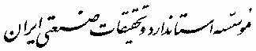
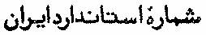
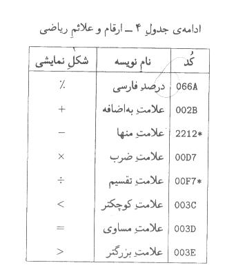
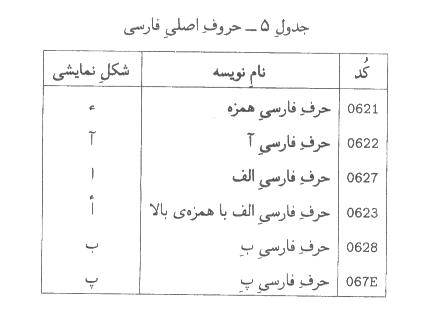
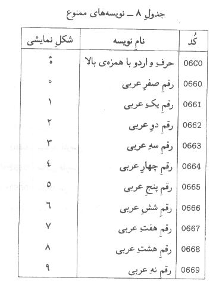
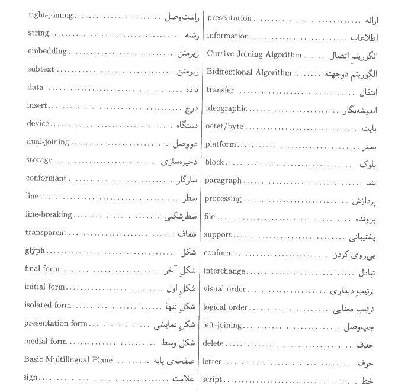
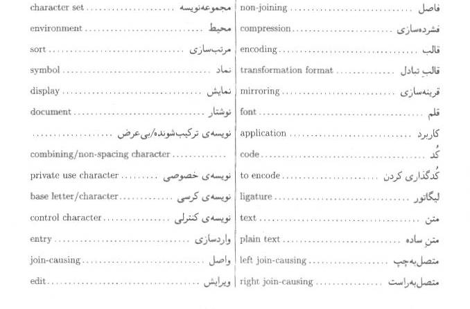
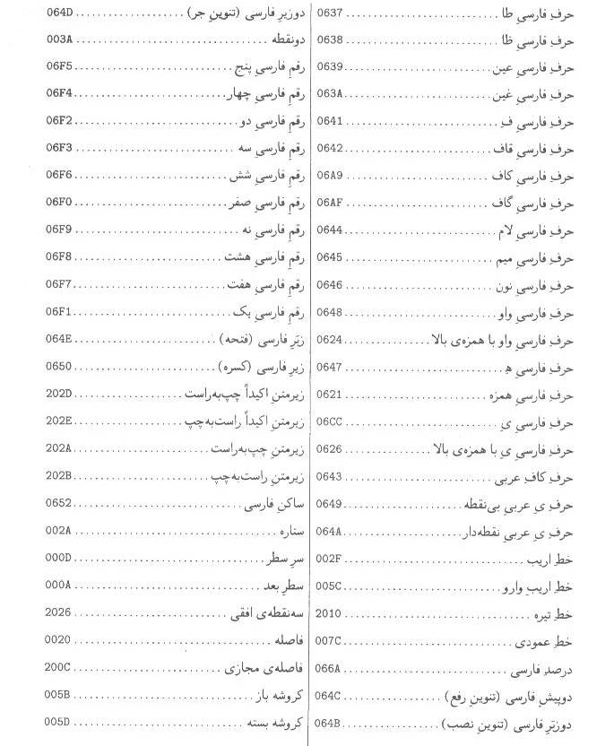
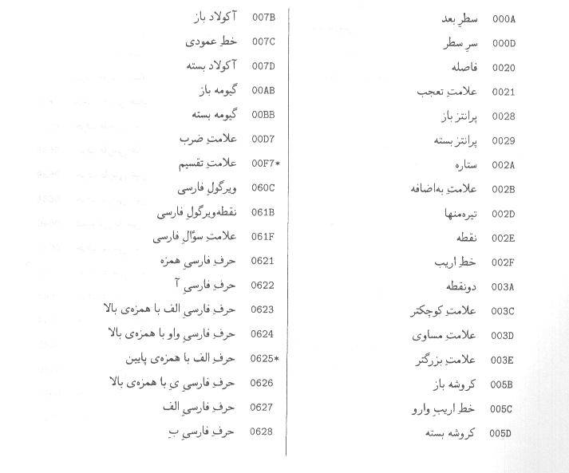

|
|
|
 |
|
|
|
|
|
 |
|
|
|
6219 |
|
|
|
|
|
|
|
فناوري
اطلاعات – تبادل و شيوهي نمايش اطلاعات فارسي براساس يوني كد |
|
|
|
|
|
|
|
چاپ اول |

آشنايي با موسسه استاندارد و تحقيقات صنعتي ايران
موسسه
استاندارد و تحقيقات صنعتي ايران به موجب قانون، تنها مرجع رسمي كشور است كه عهده
دار وظيفه تعيين، تدوين و نشر استانداردهاي ملي(رسمي) ميباشد.
تدوين
استاندارد در رشتههاي مختلف توسط كميسيونهاي فني مركب از كارشناسان موسسه ،
صاحبنظران مراكز و موسسات علمي، پژوهشي، توليدي و اقتصادي آگاه و مرتبط با موضوع
صورت ميگيرد. سعي بر اين است كه استانداردهاي ملي، درجهت مطلوبيتها و مصالح ملي
و با توجه به شرايط توليدي، فني و فن آوري حاصل از مشاركت آگاهانه و منصفانه
صاحبان حق و نفع شامل:
توليد
كنندگان، مصرف كنندگان، بازرگانان، مراكز علمي و تخصصي و نهادها و سازمانهاي
دولتي باشد. پيش نويس استانداردهاي ملي جهت نظرخواهي براي مراجع ذينفع و اعضاي
كميسيونهاي فني مربوط ارسال ميشود. و پس از دريافت نظرات و پيشنهادها در كميته
ملي مرتبط با آن رشته طرح و درصورت تصويب به عنوان استاندارد ملي(رسمي) چاپ و
منتشر ميشود.
پيشنويس
استانداردهايي كه توسط موسسات و سازمانهاي علاقمند و ذيصلاح و با رعايت ضوابط
تعيين شده تهيه ميشود نيز پس از طرح و بررسي در كميته ملي مربوط و درصورت تصويب،
به عنوان استاندارد ملي چاپ و منتشر ميگردد. بدين ترتيب استاندارهايي ملي تلقي
ميشود كه بر اساس مفاد مندرج در استاندارد ملي شماره «5» تدوين و در كميته ملي مربوط كه
توسط موسسه تشكيل ميگردد به تصويب رسيده باشد.
موسسه
استاندارد و تحقيقات صنعتي ايران از اعضاء اصلي سازمان بينالمللي استاندارد
ميباشد كه در تدوين استانداردهاي ملي ضمن توجه به شرايط كلي و نيازمنديهاي خاص
كشور، از آخرين پيشرفتهاي علمي، فني و صنعتي جهان و استانداردهاي بينالمللي
استفاده مينمايد.
موسسه
استاندارد و تحقيقات صنعتي ايران ميتواند با رعايت موازين پيشبيني شده در قانون
به منظور حمايت از مصرف كنندگان، حفظ سلامت و ايمني فردي و عمومي، حصول اطمينان از
كيفيت محصولات و ملاحظات زيست محيطي و اقتصادي، اجراي بعضي از استانداردها را با
تصويب شوراي عالي استاندارد اجباري نمايد. موسسه ميتواند به منظور حفظ بازارهاي
بينالمللي براي محصولات كشور، اجراي استاندارد كالاهاي صادراتي و درجه بندي آن را
اجباري نمايد.
همچنين به منظور اطمينان بخشيدن به استفاده كنندگان از خدمات سازمانها و موسسات فعال در ضمينه مشاوره، آموزش، بازرسي، مميزي و گواهي كنندگان سيستمهاي مديريت كيفيت و مديريت زيست محيطي، آزمايشگاهها و كاليبره كنندگان وسايل سنجش، موسسه استاندارد اينگونه سازمانها و موسسات را بر اساس ضوابط نظام تائيد صلاحيت ايران مورد ارزيابي قرار داده و در صورت احراز شرايط لازم، گواهي نامه تائيد صلاحيت به آنها اعطا نموده و بر عملكرد آنها نظارت مينمايد. ترويج سيستم بينالمللي يكاها، كاليبراسيون وسايل سنجش، تعيين عيار فلزات گرانبها و انجام تحقيقات كاربردي براي ارتقاي سطح استانداردهاي ملي از ديگر وظائف اين موسسه ميباشد.
|
كميسيون فني استاندارد فناوري اطلاعات -
تبادل و شيوهي نمايش اطلاعات فارسي براساس يوني كد |
||
|
رئيس |
||
|
تابش – يحيي |
دكتري رياضي |
دنشگاه صنعتي شريف |
|
اعضاء |
||
|
اسفهبد ميرحسين زاده سرابي - سيد بهداد |
ليسانس مهندسي كامپيوتر |
دانشگاه صنعتي شريف |
|
پورنادر – روزبه |
ليسانس مهندسي كامپيوتر |
دانشگاه صنعتي شريف |
|
خانبان - علي اصغر |
فوق ليسانس رياضي |
دانشگاه لندن |
|
علمدار ميلاني – اميد |
ليسانس مهندسي كامپيوتر |
دانشگاه صنعتي شريف |
|
دبير |
||
|
پناهي – زهرا |
فوق ليسانس علوم كامپيوتر |
دانشگاه صنعتي شريف |
|
فصيحي – مريم |
ليسانس علوم كامپيوتر |
مؤسسه استاندارد و تحقيقات صنعتي ايران |
فهرست مطالب
ساختار عمومي استاندارد يوني كد
"فناوري اطلاعات - تبادل و شيوهي نمايش اطلاعات فارسي
براساس يوني كد"
بعضي از مسائلي كه اين استاندارد به آنها نميپردازد
نويسههاي مورد استفاده در متون فارسي
بسمه تعالي
پيشگفتار
استاندارد
"فناوري اطلاعات - تبادل و شيوهي نمايش
اطلاعات فارسي براساس يوني كد "كه پيش
نويس آن توسط ))شوراي عالي انفورماتيك كشور ((9در كميسيونهاي مربوطه تهيه و تدوينشده و در پنجمين
جلسه كميته ملي استاندارد رايانه و فرآوري دادهها مورخ 1381/12/18مورد تائيد قرار گرفته است، اينك به استناد
بند يك ماده 3قانون اصلاح قوانين و مقررات مؤسسه استاندارد و تحقيقات صنعتي ايران مصوب
بهمن ماه 1371بعنوان استاندارد ملي ايران منتشر ميشود.
براي
حفظ همگامي و هماهنگي با تحولات و پيشرفتهاي ملي و جهاني در زمينه صنايع، علوم و
خدمات، استانداردهاي ملي ايران در مواقع لزوم تجديد نظر خواهند شد و هرگونه
پيشنهادي كه براي اصلاح يا تكميل اين استانداردها ارائه شود، در هنگام تجديد نظر
در كميسيونهاي فني مربوط مورد توجه قرار خواهد گرفت. بنابراين براي مراجعه به
استانداردهاي ايران بايد همواره از آخرين چاپ و تجديدنظر آنها استفاده كرد.
در
تهيه و تدوين اين استاندارد سعي شده است كه ضمن توجه به شرايط موجود و نيازهاي
جامعه، در حد امكان بين اين استاندارد و استانداردهاي بينالمللي و استانداردهاي
كشورهاي صنعتي و پيشرفته هماهنگي ايجاد شود.
منابع
و مراجعي كه براي تهيه اين استاندارد به كار رفته است به شرح زير است:
1. The Union Consortium, The Unicode Standard, Version 3.2.0, defined by:
The Unicode Standard, Version 3.0, Addison-Wesley, 2000 as, amended by the UnicodeStandard Anner#27: Unicode 3.1
(http://www. unicode.org/unicode/reports/tr27/)
and by the Unicode Standard Annex#28: Unicode 3.2
(http://www. unicode.org/unicode/reports/tr28/).
2. ISO 10646-1:2000 Information Technology-Universal Multiple-Octet Coded Character Set(UCS) - Part1: Architecture and Basic Multilingual Plane.
3. Dave Ragget, Arnaud Le Hors, Ian Jacobs, "HTML 4.01 Specification", World Wide
3. Dave Ragget, Arnaud Le Hors, Ian Jacobs, "HTML 4.01 Specification", World Wide WebConsortium, December 1999.
4. Tim Bray, Jean Paoli, C.M. Sperberg-McQueen, Eve Maler, "Extensible Markup Language(XML) 1.0" , World Wide Web Consortium, Second Edition, October 2000.
5. Martin J. Durst, Francois Yergeau, Richard Ishida, Misha Wolf, Asmus Freytag, Tex Texin, "Character Model for the World Wide Web 1.0", World Wide Web Consortium, WorkingDraft, April 2002.
.6استاندارد ملي ايران :3342سال 1372كد تبادل اطلاعات 8بيتي فارسي.
.7استاندارد ملي ايران :2900سال 1376كد تبادل اطلاعات به زبان فارسي.
.8استاندارد ملي ايران :820سال 1351حروف فارسي در ماشينهاي تحرير.
.9دستور خط فارسي، فرهنگستان زبان و ادب فارسي، .1378
.10شيوه نامه، مركز نشر دانشگاهي، ويرايش دوم، .1372
.11نتايج پروژههاي تحقيقاتي گروه ))فارسي در شبكه((، مركز محاسبات، دانشگاه صنعتي شريف، تهران، 1377تا .1381
ساختار عمومي استاندارد يوني
كد
استاندارد
يوني كد، به هر نويسه عدد يكتايي از 0تا 111،114، 1اختصاص
ميدهد. اين محدوده به 17صفحه 536، 65نويسهاي تقسيم ميشود. صفحه اول صفحه پايه نام دارد و
اكثر نويسههاي مورد استفاده در زبانهاي زنده دنيا را دربر ميگيرد.
يوني
كد بيش از صد هزار نويسه را نيز براي استفاده خصوصي مشخص ميكند كه ميتواند براي
ذخيره سازي داخلي، يا با توافق طرفين براي تبادل اطلاعات به كار رود.
يوني
كد به هر نويسه نام يكتا و مشخصي تخصيص ميدهد كه معنا يا شكل نويسه را مشخص
ميكند. به علاوه، براي هر نويسه ويژگيهاي الزامي يا اطلاعاتياي را مشخص ميكند
كه معناي آن نويسه را معين ميكنند.
استاندارد
حاضر براي تبادل خط فارسي )صورت نوشتاري
زبان فارسي (تهيه شده است و قصد مشخص كردن شيوه مرجعي
براي نگارش، يا محدود كردن دايره نويسههاي اين خط را ندارد. بلكه تلاش شده است
كليه نويسههاي مورد استفاده روزمره در متون فارسي يا متون شامل نقل قولهاي
مذهبي، در صورتي كه در استاندارد يوني كد موجود باشند، در اين استاندارد ذكر
شوند.
كميته
فني اين استاندارد نهايت تلاش ممكن را براي اطمينان از سازگاري كامل اين استاندارد
با استاندارد يوني كد انجام داده است.
يادآوري
- پس از اولين جلسه كميته ملي استاندارد براي تصويب استاندارد حاضر، نسخه 3.2استاندارد يوني كد در تاريخ 1381/1/7منتشر شد. استاندارد حاضر با نسخهاي اخير
استاندارد يوني كد نيز كاملا سازگار است. نسخهاي اخير، درخواست شوراي انفورماتيك
كشور، نويسهاي نيز براي علامت ))ريال ((با كد U+FDFC،
در نظر گرفته است. شيوه صحيح استفاده از اين نويسه در ضميمهاي بر استاندارد حاضر
منتشر خواهد شد.
استاندارد
يوني كد (Unicode)شيوهاي جهاني براي كدگذاري نويسهها و متون است. اين
استاندارد روشي هماهنگ براي كدگذاري متون چند زبانه مشخص ميكند كه تبادل اطلاعات
را در سطوح بين المللي ميسر ميسازد. يوني كدگذاري پيش فرض استانداردهاي اينترنت،
از قبيل HTMLو XMLاست و در كليه سيستم عاملها و زبانهاي برنامه سازي امروزي پشتيباني
ميشود. ثبات دادهها، امكان تبادل بين المللي متون، ساده شدن نرم افزارها و كم
شدن هزينههاي توليد، از جمله مزاياي يوني كد براي صنعت فن آوري اطلاعات است.
يوني
كد از مجموعه نويسههاي محدود 8بيتي بسيار فراتر رفته و با ظرفيت بيش از يك ميليون
نويسه، امكان كدگذاري كليه زبانهاي نوشتاري دنيا را فراهم ميكند. به علاوه،
براي انتخاب خط و زبان متن، نيازي به استفاده از كدهاي كنترلي ندارد. يوني كد
رفتار يكساني با نويسههاي الفبايي، نويسههاي انديشه نگار، و نمادها و نشانهها
دارد، كه امكان استفاده از آنها را در اختلاط با يكديگر فراهم ميكند. يوني كد،
علاوه بر تعيين كد عددي و نام براي هر نويسه كه در استانداردهاي مشابه معمول بوده
است، اطلاعات بيشتري را نيز كه براي پردازش و نمايش متون لازم است تأمين ميكند،
كه از آن جمله ميتوان به جهت نويسه و ويژگيهاي الفبايي اشاره كرد.
يوني
كد سه قالب براي تبادل و ذخيره سازي اطلاعات فراهم ميكند: UTF-8براي بسترهاي موجود 8بيتي )مناسب
براي محيطهاي مبتني بر استاندارد ASCII، از جمله اينترنت(، UTF-16براي محيطهاي 16بيتي، و UTF-32براي محيطهاي 32بيتي. علاوه بر اين، استاندارد يوني كد در
تخصيص كد به نويسهها كاملا با استاندارد بينالمللي ISO/IEC10646هماهنگ و معادل است. در واقع، هر كاربردي كه از
استاندارد يوني كد پي روي كند، با استاندارد ISO/IEC10646نيز كاملا سازگار است.
براي
اطلاعات بيشتر، به فصل 1استاندارد يوني كد مراجعه كنيد.
"فناوري اطلاعات - تبادل و شيوهي نمايش اطلاعات فارسي براساس يوني كد"
-1هدف
و دامنه كاربرد
هدف
از تدوين اين استاندارد تعيين شيوه استفاده صحيح از دو استاندارد يوني كد و ISO/IEC10646براي متون فارسي و قسمتهاي فارسي متون چند زبانه است
كه در سيستمهاي كامپيوتري، يا هرگونه سيستم ديگري كه تواناييهاي پردازشي مورد
نياز در اين استاندارد را داشته باشد، به كار ميرود.
اين
استاندارد در نمايش، انتقال، تبادل، پردازش، ذخيره سازي، ورود، و ارائه صورت
نوشتاري زبان فارسي و نمادهاي لازم براي آن به كار ميرود.
اين
استاندارد، شيوه صحيح تبادل و نمايش اطلاعات فارسي را براساس استانداردهاي همگام
يوني كد و ISO/IEC10646مشخص ميكند.
اين
استاندارد:
●نام، معني و كد متناظر با نويسههاي مورد استفاده در خط فارسي را مشخص
ميكند،
●شيوه نمايش نويسهها را در متون دو جهته، و شيوه اتصال حروف فارسي را مشخص
ميكند،
●قالبهاي مختلف يوني كد و ISO/IEC10646را براي تبادل دادهها مشخص ميكند،
●شيوه معين كردن انتهاي سطرها و بندها را مشخص ميكند،
●شيوه مقايسه رشتههاي نويسهاي را از نظر هم ارزي مشخص ميكند.
بعضي از مسائلي كه اين
استاندارد به آنها نميپردازد
استاندارد
حاضر به موارد زير نميپردازد:
●شيوههاي وارد سازي دادهها
●مرتب سازي عبارات فارسي و چند زبانه
●شيوه سطرشكني و سطربندي متون
●شيوه ويرايش، درج و حذف زير متنها
●فشرده سازي متون، يا مبادله آنها به صورت كم حجم
●مشخص كردن زبان متون و زير متنها
يادآوري
-1نهايت تلاش ممكن صورت گرفته است تا آن چه كه اين استاندارد معين ميكند،
برخلاف استانداردهاي يوني كد و ISO/IEC10646نباشد. در صورتي كه ثابت شود پي روي از قسمت
مشخصي از اين استاندارد، كاربردها را با آن دو استاندارد ناسازگار ميكند، يا
تغيير دو استاندارد فوق الذكر در آينده باعث ناسازگاري شود، آن قسمت )و فقط آن قسمت (از
اين استاندارد باطل بوده و آن چه كه در آن دو استاندارد مشخص شده جايگزين قسمت
ناسازگار ميشود. در چنين صورتي، براي سازگار شدن مجدد، ضميمههايي بر اين
استاندارد منتشر خواهد شد.
يادآوري
-2پيروي از اين استاندارد هيچ گونه ناسازگاري با استفاده از يوني كد براي
خطهاي ديگر از جمله عربي، اردو، كردي و... ايجاد نميكند. به علاوه، حروف مشترك
اين خطوط از كدهاي مشترك استفاده ميكنند. به عنوان مثال، حرف الف در همه اين
خطها از كد يكساني استفاده ميكند.
-2مراجع الزامي
مدارك
الزامي زير حاوي مقرراتي است كه در متن اين استاندارد به آنها ارجاع داده شده
است. بدين ترتيب آن مقررات، جزئي از اين استاندارد محسوب ميشود. در مورد مراجع
داراي تاريخ چار و /يا تجديد نظر، اصلاحيهها و تجديدنظرهاي بعدي اين مدارك مورد نظر نيست. مع
هذا بهتر است كاربران ذينفع اين استاندارد، امكان كاربرد آخرين اصلاحيهها و
تجديدنظرهاي مدارك الزامي زير را مورد بررسي قرار دهند. در مورد مراجع بدون تاريخ
چاپ و /يا تجديد نظر، آخرين چاپ و /يا تجديدنظر آن مدارك الزامي ارجاع داده شده مورد نظر
است.
استفاده
از مراجع زير براي كاربرد اين استاندارد الزامي است.
1. The Unicode Consortium , The Unicode Standard , available from
http://www.unicode.org/
2. Mark Davis,
"The Unicode Standard Annex#9, The Bidirectional Algorithm",
availableform http://www.unicode.org/unicode/reports/tr9/
3. Mark Davis,
"The Unicode Standard Annex#13, Unicode Newline Guidelines",
availableform http://www.unicode.org/unicode/reports/tr13/
4. Mark
Davis, Martin Durst, "The Unicode
Standard Annex#15, Unicode NormalizationForms", available form
http://www.unicode.org/unicode/reports/tr15/
5. Francois
Yergeau, "UTF-8, a transformation format of ISO 10646", RFC 2279,
January ",1998, available form http://www.unicode.ietf.org/rfc/rfc2279.txt
6. Paul Hoffman,
Francois Yergeau, "UTF-16, an encoding of ISO10646", RFC2781,
February2000, 79, January ", 1998, available form
http://www.unicode.ietf.org/rfc/rfc2781.txt
7. Mark Davis, "Unicode Standard Annex#19, UTF-32", available formhttp://www.unicode.org/unicode/reports/tr19/
-3اصطلاحات
و تعاريف
در
اين استاندارد اصطلاحات و /يا واژهها با تعاريف زير به كار ميرود:
-1-3متن
در
اين استاندارد عمومأ منظور از ))متن ((متن كد شده يا ذخيره شده روي كامپيوتر است. در برابر textبه كار ميرود.
-2-3خط
))خط ((مجموعهاي از نمادها است كه ميتوان با آن كلمات يك يا
چند زبان را نشان داد. در برابر scriptبه كار ميرود.
-3-3نويسه
))نويسه ((كوچكترين واحد متن نوشته شده است، مستقل از شكل آن.
در برابر characterبه كار ميرود.
-4-3مجموعه نويسه
))مجموعه
نويسه ((مجموعهاي از نويسههايي است كه براي ارائه
اطلاعات نوشتاري استفاده شوند. در برابر character
setبه كار ميرود.
-5-3شكل
))شكل ((صورت نمايشي نويسه در يك زمينه خاص است. نويسهها
ميتوانند شكلهاي متعددي داشته باشند. در برابر glyphبه كار ميرود.
-6-3متن ساده
))متن ساده ((متني است كه شامل اطلاعات ساختاري يا ارائهاي نيست.
در برابر plain textبه كار ميرود.
-7-3كد گذاري كردن
))كد گذاري
كردن ((اختصاص يك به يك كدها به نويسهها است. در
برابر encodeبه كار ميرود.
-4نمادها
در
متن اين استاندارد از نمادهاي زير استفاده شده است:
عدد
يا كد متناظر با نويسههاي يوني كد به شكل U+nمشخص ميشود، كه در آن nيك عدد چهار تا شش رقمي در مبناي شانزده است، و ارقام لاتين 0تا 9،
و حروف لاتين Aتا ) Fجاي گزين 10تا (15استفاده ميكند. عدد nنبايد با صفر شروع شود، مگر اين كه كمتر از
چهار رقم داشته باشد. مثلا: U+0001، U+0012، U+0123، U+1234و .U+102345در جدولها ممكن است براي اختصار U+حذف شود.
مثال
- U+066Bكد يوني كد نويسهي ))مميز
فارسي ((است.
محدودهاي
از نويسههاي يوني كد به شكل U+x..U+yيا x..yمشخص ميشود، كه در آن xو اولين yو آخرين نويسههاي محدودهاند و نقطهها نمايانگر محدوده پيوستهاي از
نويسهها، كه شامل دو نويسه اول و آخر فهرست نيز ميشود.
مثال
- U+0900..U+097Fشامل 128كد يوني كد است.
دنباله
دو يا چند كد يوني كد با ويرگول لاتين جدا شده و به شكل (U+x,U+y,...,U+z)مشخص ميشود. ترتيب نويسهها در نمادگذاري فوق از چپ به
راست است. نماد U+اختياري است.
استاندارد
حاضر به كليه نويسههايي كه تعريف ميكند نامي يكتا اختصاص داده است. اين نامهها
لزومأ ترجمه دقيق نام انگليسي نويسههاي استانداردهاي يوني كد و ISO/IEC10646نيستند، بلكه براساس كاربرد آن نويسهها در كاربردهاي
فارسي انتخاب شدهاند. در اين نامها فقط از حروف و نشانههاي زبان فارسي استفاده
شده است.
-5نويسههاي مورد استفاده در متون فارسي
اين
بخش نويسههايي را در برميگيرد كه در اين استاندارد معناي مشخصي به آنها تخصيص
داده شده است. اگر كاربردي از نويسهاي كه در اين بخش آمده پشتيباني كند، بايد
اين نويسه را دقيقأ بر مبناي معناي ذكر شده در اين استاندارد تفسير يا توليد كند.
پشتيباني
اين نويسهها اجباري است، مگر نويسههايي كه با علامت ستاره مشخص شدهاند.
پشتيباني نويسههاي ستارهدار اختياري است، ولي در صورت پشتيباني شدن، آنها نيز
بايد برمبناي معناي ذكر شده در اين استاندارد تفسير يا توليد شوند.
در
صورتي كه كاربردها نياز به نويسههاي ديگري نيز داشته باشند، اين استفاده بايد
دقيقأ براساس معناي تعريف شده در استاندارد يوني كد صورت گيرد.
يادآوري
-1از آن جا كه استاندارد ISO/IEC10646معناي چندان مشخصي به نويسهها تخصيص
نميدهد، سازگار بودن با آن استاندارد كافي نيست و استفاده از نويسههاي ديگر بايد
با استاندارد يوني كد نيز سازگار باشد.
يادآوري
-2شكل مشخص شده براي نويسهها در اين استاندارد فقط جنبه اطلاعاتي دارد و مگر
در مواردي كه خلاف آن ذكر شده باشد. نويسهها مجازند بسته به قلم مورد استفاده،
به هر شكلي كه نمايانگر آن نويسه باشد، نمايش داده شوند. حتي ممكن است كاربردها
براي نمايش نويسهها از خطي مانند بريل كه شباهتي به خط فارسي ندارد استفاده كنند.
-1-5نويسههاي كنترلي
جدول -1نويسههاي كنترلي

يادآوري
-1در صورتي كه متن در قالب UTF-8باشد، براي جدا كردن سطرها و بندها بايد
بسته به بستر كاربرد از LF، CRيا LF)، (CRاستفاده شود. استفاده از LSو PSدر متون با قالب UTF-8مجاز نيست. براي اطلاع از شيوه صحيح استفاده از اين نويسهها، به پيوست ت
مراجعه كنيد.
يادآوري
-2نويسههاي ))فاصله مجازي ((و ))اتصال مجازي ((در الگوريتم اتصال فارسي به كار ميروند. براي اطلاعات بيشتر به پيوست ب
مراجعه كنيد.
يادآوري
-3نويسههاي LRM، RLM، LRE، RLE، PDF، LROو RLOدر الگوريتم دو جهته به كار ميروند. براي اطلاعات بيشتر به پيوست الف
مراجعه كنيد.
يادآوري
-4نويسه BOMبايد براي تمييز متوني كه در صورت عدم وجود اين نويسه ممكن است اشتباه
پردازش شوند، به كار برده شود. استفاده از اين نويسه در ابتداي پروندههاي UTF-6و UTF-32توصيه ميشود ولي در ابتداي پروندههاي UTF-8كه ترتيب بايتها معني ندارد شديدا نهي ميشود. استفاده از اين نويسه براي
مقاصد ديگر مجاز نيست. براي اطلاعات بيشتر به پيوست پ مراجعه كنيد.
-2-5علائم نقطه گذاري مشترك


كاربردها موظفند از شكلهاي نمايشي مختلفي براي اين دو نويسه استفاده كنند )مگر در مواردي كه محدوديتهاي خاص نمايشي وجود دارد، مانند دستگاههاي تلفن همراه.(
يادآوري
-2نويسههاي جفتي، از قبيل پرانتزها و قلابها، بسته به موقعيت خود در متن،
شكلهاي مختلفي ميپذيرند. مثلا ))پرانتز باز (U+0028) ((در متون راست به چپ به شكل «)»و در متون
چپ به راست به شكل «(»ظاهر ميشود. مشروح اين رفتار در پيوست الف
آمده است.
يادآوري
-3نويسه ))تيرهمنها ((فقط در مواردي به كار ميرود كه تفكيك ))خط
تيره (U+2010)
((از علامت منها (U+2212)ممكن نباشد، مثلا هنگامي كه دادهها از قالب ديگري كه
اين دو نويسه را متمايز نميداند به قالب يوني كد تبديل شده باشند. در صورت مشخص
بودن معناي نويسه، بايد از نويسههاي دقيق يعني U+2010يا U+2212استفاده كرد.
-3-5علائم نقطه گذاري فارسي
جدول
-3علائم نقطه گذاري فارسي


يادآوري
- »علامت كوچكتر «و » علامت بزرگتر «بسته به موقعيت خود در متن، شكلهاي مختلفي
ميگيرند. مشروح اين رفتار در پيوست الف آمده است. شكل اين نويسهها در جدول فوق
با توجه به زمينه معمول آنها، يعني در ميان اعداد، آمده است.
-5-5حروف اصلي فارسي



يادآوري
-1بعضي از نويسههاي جدول فوق را ميتوان به صورت دو نويسه نيز مبادله كرد.
مثلا ))حرف فارسي آ ((را ميتوان هم به صورت U+0622و هم به صورت (U+0627,U+653)مبادله كرد. در اين موارد، شكل تك نويسهاي مرجح است.
براي اطلاع دقيقتر در اين باره، به پيوست ث مراجعه كنيد.
يادآوري
-2حروف فارسي شكلهاي مختلفي به خود ميپذيرند، مثلا ))حرف
فارسي عين ((به شكلهاي ))ع(('، '))ع (('و ')ع ((و ))ع ((ديده
ميشود. اين شكلها در الگوريتم اتصال فارسي تعيين ميشوند. اين الگوريتم در پيوست
ب تشريح شده است. شكلهايي كه در جدول فوق آمدهاند فقط جنبه اطلاعاتي دارند.
-6-5حروف فرعي

يادآوري
-1استفاده از ))حرف كاف عربي ((به جاي ))حرف فارسي كاف ((و استفاده از حرف ي عربي نقطهدار ((يا ))حرف ي عربي بينقطه ((به جاي ))حرف فارسي ي ((به هيچ عنوان مجاز نيست. تنها در صورتي ميتوان از اين نويسهها استفاده
كرد كه شكل خاص آنها مورد نظر بوده، يا متن به زبان عربي، اردو و امثال آنها
باشد. كاربردها موظفند اين نويسهها را به شكل درست آنها نمايش دهند. ))حرف ي عربي نقطه دار ((هيچ گاه نبايد بدون نقطه نمايش داده شود.
))حرف كاف
عربي ((در شكلهاي اول و وسط مانند ))حرف فارسي كاف ((است، اما در شكلهاي آخر و تنها بدون سركش و به همراهس علامتي شبيه به
همزه ظاهر ميشود. ))حرف ي عربي نقطه دار ((در شكلهاي اول و وسط مانند ))حرف فارسي ((است، اما در شكلهاي آخر و تنها با دو نقطه در زيرش
ظاهر ميشود. ))حرف ي عربي بينقطه ((در شكلهاي آخر و تنها مانند ))حرف فارسي ي ((است، اما در شكلهاي اول و وسط بدون نقطه ظاهر ميشود.
-7-5نشانههاي فارسي

يادآوري
-1نويسههاي فوق خاصيت تركيب شونده دارند و بايد برحسب مورد، بالا يا زير
نويسه قبل از خود نمايش داده شوند. در مورد تأثير اين نويسهها بر الگوريتم
اتصال، به پيوست ب مراجعه كنيد.
يادآوري
-2در صورتي كه نويسههاي ))همزه فارسي
بالا ((و ))همزه
فارسي پايين ((روي ))حرف
فارسي ي ((يا ))حرف
ي عربي نقطهدار
((بيابند، نويسه كرسي نقطههاي
خود را از دست ميدهد.
يادآوري
-3كاربردها ميتوانند براي نمايش تركيب نشانهها از شكلهاي خاص استفاده
كنند. مثلا براي تركيب ))تشديد فارسي ((و ))زير فارسي ((بهتر است به جاي نمايش دادن ))زير فارسي ((در زير حرف كرسي، آن را در زير ))تشديد
فارسي ((نمايش داد.
-8-5نويسههاي ممنوع
اين
نويسهها نبايد در متون فارسي استفاده شوند. استفاده از آنها در متون زبانهاي
ديگر مانند عربي و اردو بايد براساس تعريف موجود در استاندارد يوني كد صورت گيرد.

يادآوري
-1نام نويسههاي جدول فوق استاندارد نيست و فقط جنبه اطلاعاتي دارد. اين
استاندارد به نويسههاي جدول فوق نامي اختصاص نميدهد.
يادآوري
-2نويسه U+06C0نبايد به هيچ عنوان براي متون فارسي استفاده شود. براي
نوشتن عباراتي مثل ))خانه ما ((بايد از نويسه ))حرف فارسي ه (U+0647) (('به همراه ))همزه فارسي
بالا (U+0654) ((استفاده شود. كاربردها ميتوانند در صورتي
كه در متون فارسي به اين نويسه برخوردند آن را بسته به مورد با (0647,0654)يا (0647,0654,200C)جاي گزينند. در صورتي كه متن يا زير متن به
زبان فارسي نباشد، اين جايگزيني نبايد صورت گيرد.
يادآوري
-3استفاده از ارقام عربي (U+0660..U+0669)مگر در مواردي كه كاربرد بخواهد ميان ارقام
فارسي و عربي تمايز قائل شود مجاز نيست. كاربردهايي كه بخواهند ارقام عربي را
پشتيباني كنند بهتر است ميان شكل ارقام چهار، پنج و شش فارسي و عربي تمايز قائل
شوند. بايد دقت شود كه ارقام فارسي و عربي از لحاظ جهت پذيري در الگوريتم دو جهته
يوني كد تفاوت دارند.
-9-5نويسههاي منسوخ
كليه
نويسههايي كه در استاندارد يوني كد به عنوان منسوخ مشخص شدهاند، در اين
استاندارد نيز منسوخ تلقي ميشوند. كاربردها نبايد اين نويسهها را توليد كنند، و
در صورت برخوردن به آنها ميتوانند از آنها چشم پوشي كرده، يا آنها را براساس
آخرين نسخه استاندارد يوني كد تفسير كنند.
پيوست الف
الگوريتم دو جهته
)الزامي(
به
علت تفاوت جهت نوشتن خطهاي فارسي و لاتين، و از آن جا كه متون فارسي شامل اعداد و
علائم رياضي، يا متون چند زبانه، در هنگام پردازش با ابهام روبه رو ميشوند،
استاندارد يوني كد نويسههاي اين متون را به ترتيب معنايي، يعني ترتيبي كه
نويسهها از ذهن خواننده متن ميگذرند كدگذاري ميكند. الگوريتم دو جهته براي
تبديل اين ترتيب به يك ترتيب قابل نمايش به كار ميرود.
در
كاربردهاي مبتني بر اين استاندارد، نويسهها بايد به ترتيب معنايي مبادله شوند.
بنابراين براي نمايش اطلاعات فارسي، ممكن است لازم باشد رشته نويسههاي ورودي به
ترتيب ديداري تبديل شود. شيوه انجام اين تبديل، بايد دقيقأ از ضميمه 9استاندارد يوني كد پي روي كند. كاربردهايي كه از ضميمه فوق الذكر پي روي
نكنند، با اين استاندارد سازگار نيستند.
يادآوري
-1شكل بعضي از نويسهها، از جمله ))پرانتز باز ((به نويسههاي اطراف خود بستگي دارد. اين نويسهها در
صورتي كه در متون با جهت مخالف قرار گيرند، به اصطلاح قرينه ميشوند. كاربردها
بايد قرينه سازي را پشتيباني كنند. مشروح اين رفتار در ضميمه 9استاندارد يوني كد آمده است.
يادآوري
-2در كد گذاري متون دو جهته، مواردي پيش ميآيد كه ترتيب ديداري ضمني اي كه
از نويسهها به دست ميآيد مطلوب نيست. در اين حالتها ميتوان از نويسههاي
كنترل جهت جدول 1بخش 1-5استفاده كرد. اين نويسهها فقط براي تصحيح ترتيب نمايش متن به كار ميروند
و بايد در پردازشهاي ديگر )مانند مرتب
سازي متن با جستجوي عبارات (ناديده گرفته
شوند. براي اطلاعات بيشتر به ضميمه 9استاندارد يوني كد مراجعه كنيد.
پيوست ب
الگوريتم اتصال
)الزامي(
از
آنجا كه حروف فارسي، بسته به حروف قبل و بعد از خود اشكال مختلفي ميگيرند، در
صورتي كه كاربردها بخواهند نويسهها
را با خط فارسي نمايش دهند، براي نمايش اطلاعات فارسي و انتخاب شكل مناسب، بايد از الگوريتم مشخص شده در اين پيوست استفاده كنند. اين الگوريتم، حداقل تغيير شكل مورد نياز را براي نمايش متون فارسي مشخص ميكند، ولي ممكن است، بسته به كاربرد، از الگوريتم پيچيدهتري نيز استفاده شود )مثلا در كاربردهايي كه متن را با خط نستعليق نمايش ميدهند.(
الگوريتم اتصال بايد، با در نظر گرفتن نويسههاي شفاف، پس از الگوريتم دو جهته انجام شود )يا خروجيش با حالتي كه اين الگوريتم پس از الگوريتم دو جهته انجام ميشود يكسان باشد.(
ب- -1ردهي اتصال
هر
نويسه، در يكي از ردههاي اتصال دسته بندي ميشود. اين ردهها، شيوه تغيير شكل
نويسه و تأثير آن را بر نويسههاي ديگر مشخص ميكنند. اين ردهها به شرح زيرند:
●راست وصل: نويسههاي دو شكلي از قبيل ))آ((، ))الف((، ))دال((، ))ر((، ))واو ((و ))ت گرد .((با حرف Rمشخص ميشوند.
●دو وصل: نويسههاي چهار شكلي از قبيل ))ب((، ))جيم((، ))سين((، و ))صاد .((با حرف Dمشخص ميشوند.
●واصل: نويسههاي ايجاد كننده اتصال، از قبيل ))كشيدگي ((و ))اتصال مجازي .((تفاوت اين نويسهها با نويسههاي ))دو
وصل ((اين است كه تغيير شكل نميدهند. با حرف Cمشخص ميشوند.
●فاصل: نويسههاي قطع كننده اتصال، شامل ))فاصله
مجازي ((و كليه نويسههاي غير تركيب شونده كه در
دستهبندي فوق قرار نميگيرند، از قبيل ))همزه ((فاصلهها، ارقام، علائم نقطه گذاري، و حروف خطهاي
لاتين، يوناني و غيره. با حرف Uمشخص ميشوند.
●شفاف: نويسههاي شفاف نسبت به اتصال، شامل نويسههاي تركيب شونده و
كنترلي، از قبيل ))زبر((، ))دو
زبر((،
))سكون((، ))تشديد((، ))الف مقصوره ((و ))نشانه راست به چپ .((با حرف Tمشخص ميشوند.
در
اين پيوست، از اصطلاح ))متصل به چپ ((براي نويسههاي ))دو وصل ((و ))واصل ;((و از اصطلاح ))متصل به راست ((براي نويسهها، بايد براساس پرونده ArabicShaping.txtاز پروندههاي دادهاي يوني كد، كه آخرين نسخه آن در
نشاني اينترنتي
http://www.unicode.org/Public/UNIDATA/ArabicShapingtxt
در
دسترس است تعيين شود.
يادآوري
- نويسههاي ))فاصله مجازي ((و ))اتصال مجازي ((براي تغيير شكل نويسهها به كار ميروند. از اين دو نويسه براي ممانعت از
اتصال دو حرف مجاور )مثلا در كلمه ))خانهها(((، يا انتخاب شكلي غير
از شكل معمول حروف )مثلا در ))ه.'ش.((، به عنوان ))هجري
شمسي (((استفاده ميشود.
ب- -2الگوريتم
براي
نويسهها، بسته به رده اتصالشان، تا چهار شكل تعيين ميشود. اين شكلها در اصطلاح
))اول((، ))وسط((، ))آخر((، و ))تنها ((ناميده ميشوند. نويسههاي ))راست
وصل ((فقط دو شكل ))آخر ((و ))تنها ((را ميگيرند.
الگوريتم
اتصال به شرح زير است:
-1نويسههاي ))شفاف ((رفتار اتصالي نويسههاي پايه را تغيير نميدهند. )بنابراين از اين به بعد، منظور از نويسه سمت راست، اولين نويسه غير شفاف سمت راست خواهد بود; همين طور در مورد نويسه سمت چپ.(
-2اگر نويسهاي ))راست وصل ((باشد، و نويسه سمت راستش ))متصل به چپ ((باشد، به شكل ))آخر ((در ميآيد.
-3اگر نويسهاي ))دو
وصل ((باشد، نويسه سمت راستش ))متصل به چپ ((باشد، و
نويسه سمت چپش ))متصل به راست ((باشد، به شكل ))وسط ((در ميآيد.
-4اگر نويسهاي ))دو
وصل ((باشد، نويسه سمت راستش ))متصل به چپ ((باشد، و
نويسه سمت چپش ))متصل به راست ((نباشد، به شكل ))آخر ((درميآيد.
-5اگر نويسهاي ))دو
وصل ((باشد، نويسه سمت راستش ))متصل به چپ ((نباشد، و
نويسه سمت چپش متصل به راست ((باشد، به
شكل ))اول ((درميآيد.
-6در صورتي كه هيچ يك از حالتهاي فوق برقرار
نباشند، نويسه به شكل ))تنها ((درميآيد.
يادآوري
-1در صورتي كه نويسهاي اولين نويسه غير ))شفاف ((سطر يا بند خود باشد، نويسه سمت راستش ))فاصل ((فرض ميشود.
همين طور، در صورتي كه نويسهاي آخرين نويسه غير ))شفاف ((سطر يا بند خود باشد، نويسه سمت چپش ))فاصل ((فرض ميشود.
يادآوري
-2از آن جا كه اين الگوريتم پس از الگوريتم دو جهته انجام ميشود، نويسههاي
سمت راست و چپ براساس ترتيب ديداري تعيين ميشوند.
ب- -3گروه
اتصال
هر
يك از حروف فارسياي كه شكلهاي مختلف ميگيرند، بسته به شكل ظاهري در گروههاي
اتصال دستهبندي ميشوند. اين گروهها نيز بايد براساس پرونده ArabicShaping.txtاز پروندههاي دادهاي يوني كد، كه آخرين نسخه آن در
نشاني اينترنتي
http://ww.unicode.org/Public/UNIDATA/ArabicShaping.txt
در
دسترس است تعيين شود.
براساس
آخرين نسخه در دسترس در زمان تدوين اين استاندارد، حروف شكل پذيري كه در بخشهاي 5-5و 6-5آمدهاند در اين گروهها قرار ميگيرند:

يادآوري
- فهرست فوق فقط جنبه اطلاعاتي دارد. كاربردها موظفند به اطلاعات موجود در پرونده ArabicShaping.txtمراجعه كنند.
ب- -4ليگاتورها
حروف
فارسي ميتوانند بسته به قلم مورد استفاده، اشكال چند حرفياي به نام ليگاتور
بسازند. مثلا تركيب ))لام ((و ))الف ((ميتواند به شكل ))لا ((و تركيب ))ف ((و ))ي ((ميتواند به شكل ))في ((بيايد.
بعضي
از ليگاتورها اختياري و بعضي ديگر اجبارياند. ليگاتورهاي اجباري، ليگاتورهايي
هستند كه حرف اولشان از گروه اتصال ))لام (LAM) ((و حرف دومشان از گروه اتصال ))الف (ALEF) ((باشد.
ليگاتورهاي اختياري، ليگاتورهاي ديگر هستند كه بسته به قلم نمايشي ممكن است به
شكل ليگاتور نمايش يابند. كاربردها موظفند در نمايش متون، ليگاتورهاي اجباري را
به شكل ليگاتور نمايش دهند، مگر در مواردي كه جلوههاي بصري خاص مورد نظر باشد، يا
دستگاه نمايش محدوديتهاي ويژهاي داشته باشد.
براي
اعمال اين ليگاتورها، از الگوريتم زير استفاده ميشود:
-1نويسههاي ))شفاف ((رفتار ليگاتوري نويسههاي پايه را تغيير نميدهند.
-2هردنباله دوتايي از نويسهها كه نويسه سمت
راستش در گروه ))لام ((و به شكل ))وسط((، و نويسه سمت چپش در گروه ))الف ((و به شكل ))آخر ((باشد،
ليگاتوري از دسته ))لام الف ((را به شكل ))آخر ((تشكل ميدهد.
-3هر دنباله دوتايي از نويسهها كه نويسه سمت
راستش در گروه ))لام ((و به شكل ))اول((، و نويسه سمت چپش در گروه ))الف ((و به شكل ))آخر ((باشد،
ليگاتوري از دسته ))لام الف ((را به شكل ))تنها ((تشكيل ميدهد.
-4هرگاه بين دو يا چند نويسه كه به طور پيش
فرض به هم متصل ميشوند ولي ليگاتور نميشوند، يك يا چند نويسه ))اتصال مجازي ((قرار گيرد، در صورت موجود بودن شكل ليگاتوري نويسهها در قلم مورد استفاده
براي نمايش، بايد از شكل ليگاتوري استفاده شود.
-5هرگاه بين دو يا چند نويسه، نويسه ))فاصله مجازي ((قرار گيرد، بايد شكل عادي نويسهها مورد استفاده قرار گيرد. مثلا اگر
دنباله ))اتصال مجازي فاصله مجازي، اتصال مجازي ((بين ))لام ((و ))الف ((قرار گيرد، اين دو حرف نبايد ليگاتور شوند، بلكه بايد به شكل ))لا ((نمايش
يابند.
پيوست پ
قالبهاي تبادل دادهها
)الزامي(
در
استاندارد يوني كد ميتوان از قالبهاي متعددي براي تبادل اطلاعات استفاده كرد.
ولي استاندارد حاضر فقط به قالبهاي اصلي، يعني UTF-8،
UTF-16، و UTF-32،
ميپردازد. قالبهاي مشتق، مثلا UTF-16LE،
حالت خاصي از قالب اصلي نظيرشان )در اين مثال (UTF-16فرض ميشوند.
كاربردهايي
كه در قالبهاي يوني كدي خروجي ميدهند، يا ورودي قبول ميكنند، موظفند در صورت
استفاده از قالبهاي UTF-8، UTF-16و UTF-32، به ترتيب از RFC2279، RFC2781، و ضميمه 19استاندارد يوني كد پيروي كنند. در صورتي كه كاربردها از قالب UTF-8استفاده ميكنند، بهتر است نويسه U+FEFFرا در ابتداي خروجي توليد نكنند، ولي بهتر
است در صورتي كه اين نويسه در ابتداي وروديهاي در قالب UTF-8بيايد، آن را به عنوان علامت مشخص كننده در
نظر گرفته، و پردازشش نكنند.
يادآوري - كاربردها بهتر است يكي از صورتهاي نرمال مشخص شده در ضميمه 15استاندارد يوني كد را انتخاب كرده و خروجيهاي خود را در آن قالب توليد كنند. )براي اطلاعات بيشتر به پيوست ث مراجعه كنيد.(
پيوست ت
سطربندي و پاراگراف بندي
)الزامي(
كرابردها
موظفند نويسههاي جداكننده سطرها و بندها را براساس توصيههاي ضميمه 13استاندارد يوني كد تفسير كنند.
علاوه
بر محدوديتهاي مشخص شده در ضميمه فوق الذكر، در صورتي كه كاربردي بخواهد متني در
قالب UTF-8توليد كند، نبايد از نويسههاي ))جداكننده
سطرها (U+2028)
((و ))جداكننده
بندها (U+2029)
((استفاده كند. بلكه بايد از
علامت مخصوص جدا كردن سطرها در بستر كاربرد استفاده كند كه معمولا U+000A، U+000D، يا (U+000D,U+000A)است.
پيوست ث
نرمال سازي و هم ارزي
)اطلاعاتي(
از
آنجا كه دنبالهاي از حروف و نمادها ميتواند به روشهاي مختلفي به رشتهاي از
نويسهها تبديل شود )مثلا كلمه ))مؤمن ((را هم ميتوان هم با نويسه ))واو
با همزه بالا((،
و هم با دنباله نويسههاي ))واو، همزه
بالا ((كدگذاري كرد(، كاربردها بهتر است به منظور
هماهنگي خروجيهاي خود، آنها را به صورت يكي از صورتهاي نرمال يوني كد، كه در
ضميمه 15استاندارد يوني كد توصيف شده است توليد كنند.
استاندارد
حاضر، به عنوان قالب مرجح در تبادل دادهها، صورت نرمال (Normalization Form C) Cو قالب UTF-8را توصيه ميكند. اين انتخاب به علت فراگير
بودن اين قالب، و توصيه شدن آن در استانداردهاي كنسرسيوم World Wide
Webاز جمله HTMLو XML، صورت گرفته است.
در ))صورت نرمال ((C، نويسههايي كه ميتوانند به چند
شكل مختلف كدگذاري شوند، به شكل تك نويسهاي كدگذاري ميشوند. به علاوه، ترتيب
واحدي براي حالتهايي كه چند علامت تركيب شونده روي يك حرف كرسي قرار ميگيرند
تعيين ميشود.
از
طرف ديگر، در صورتي كه كاربردها صورتهاي نرمال مختلفي را پشتيباني ميكنند، بهتر
است رشتههاي ))هم ارز ((را تشخيص دهند. براي اطلاع بيشتر، به فصلهاي 2و 3استاندارد يوني كد مراجعه كنيد.
يادآوري
- كاربردها ميتوانند لايههاي بالاتري از ))هم
ارزي ((را نيز پشتيباني كنند، مثلا هم ارزي ضعيف
بين نويسههايي مانند ))كاف ((و ))كاف
عربي((،
يا بين رشته نويسههاي ))ي، همزه بالا ((و ))ي عربي نقطهدار، همزه بالا .((اين استاندارد به اين گونه همارزيها نميپردازد.
پيوست ج
واژهنامه
)اطلاعاتي(


پيوست چ
كد نويسهها
)اطلاعاتي(
اين
پيوست، فهرست كدهاي نويسههاي استاندارد حاضر، در استاندارد يوني كد است كه به
ترتيب الفبايي نام نويسه مرتب شده است.



پيوست ح
نام نويسهها
)اطلاعاتي(
اين
پيوست، فهرست نامهاي نويسههاي تعريف شده در استاندارد حاضر، به ترتيب كد نويسه
در استاندارد يوني كد است.



يادآوري
- علامت ستاره در سمت راست كد نويسه به معناي اختياري بودن آن نويسه است.
|
ISLAMIC |
|
|
|
|
|
|
|
ISIRI NUMBER |
|
|
|
6219 |
|
|
|
|
|
|
|
Information technology - Persian information interchange and display mechanism, using Unicode |
|
|
|
|
|
|
|
1st Edition |